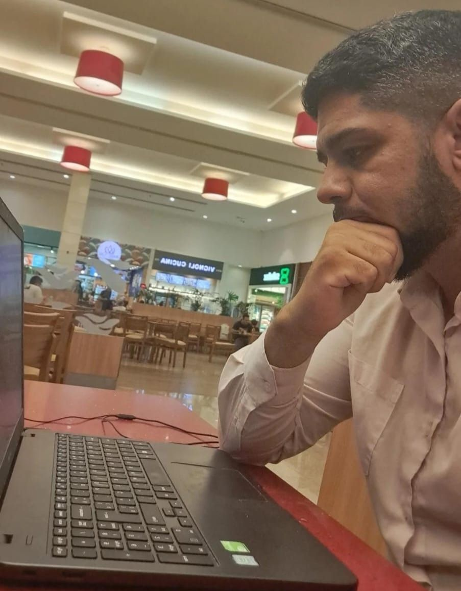

JOÃO VICTOR OLIVEIRA CAVALCANTE WDD 130

Hello World, i am João Victor, but you could call me JV, i am from Brazil, in currently i learn about prgramming and english with BYU PATHWAY.
Hello World, i am João Victor, but you could call me JV, i am from Brazil, in currently i learn about prgramming and english with BYU PATHWAY.